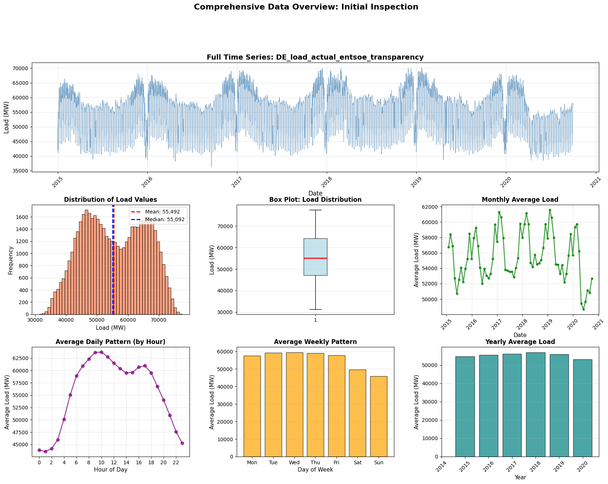
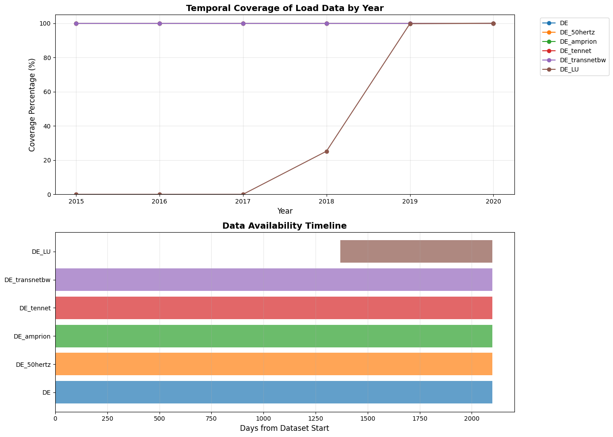
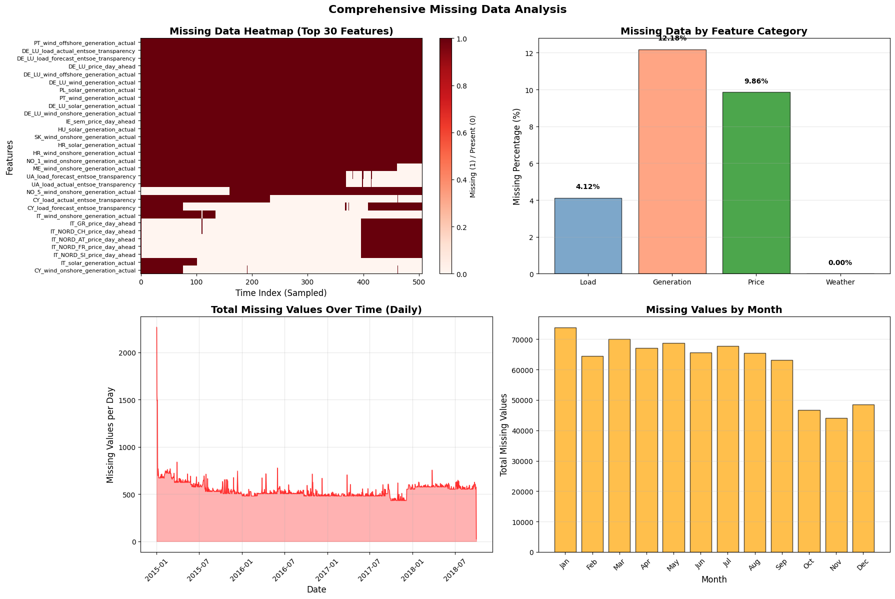
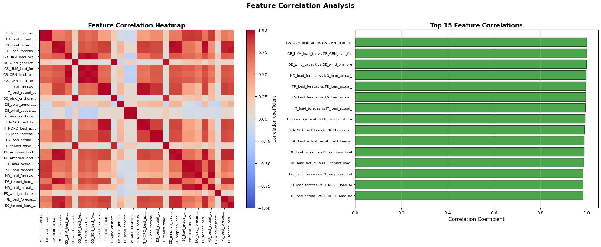
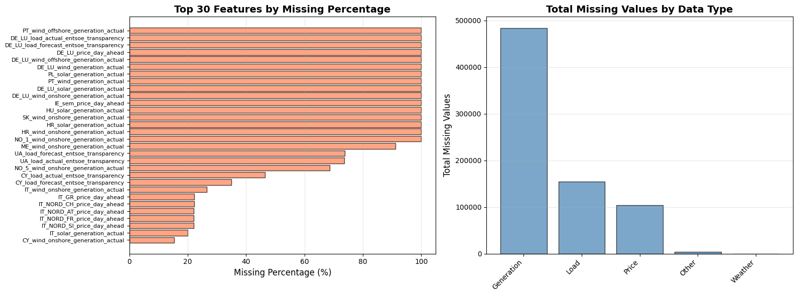
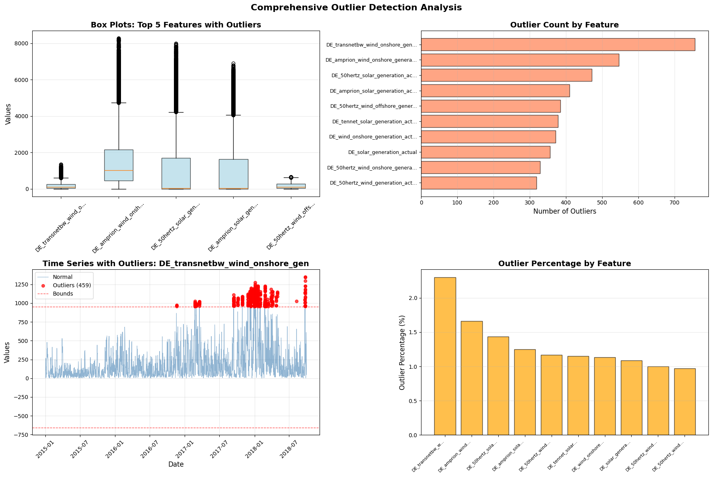
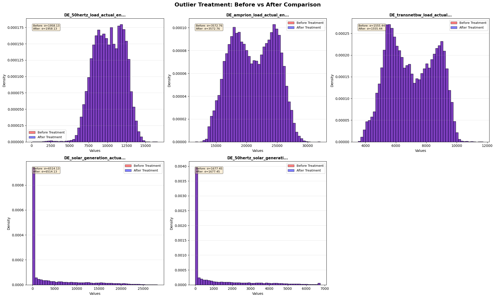
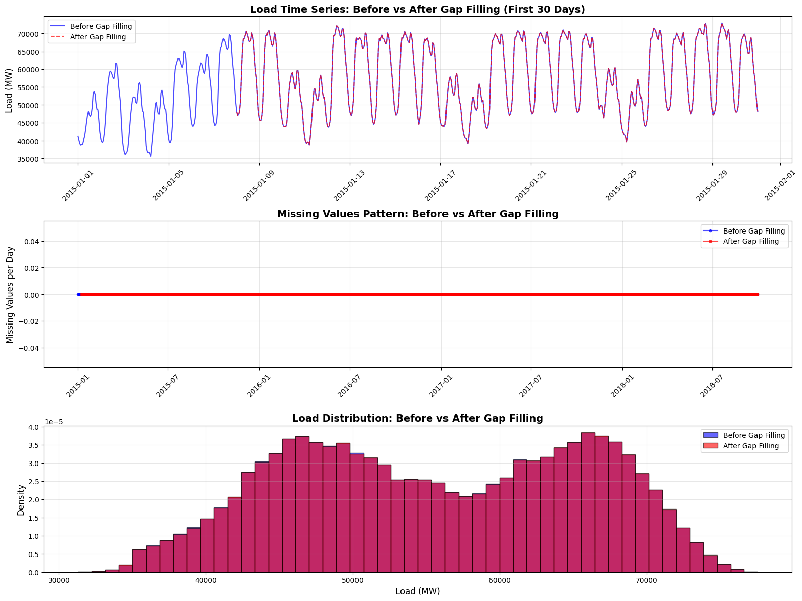
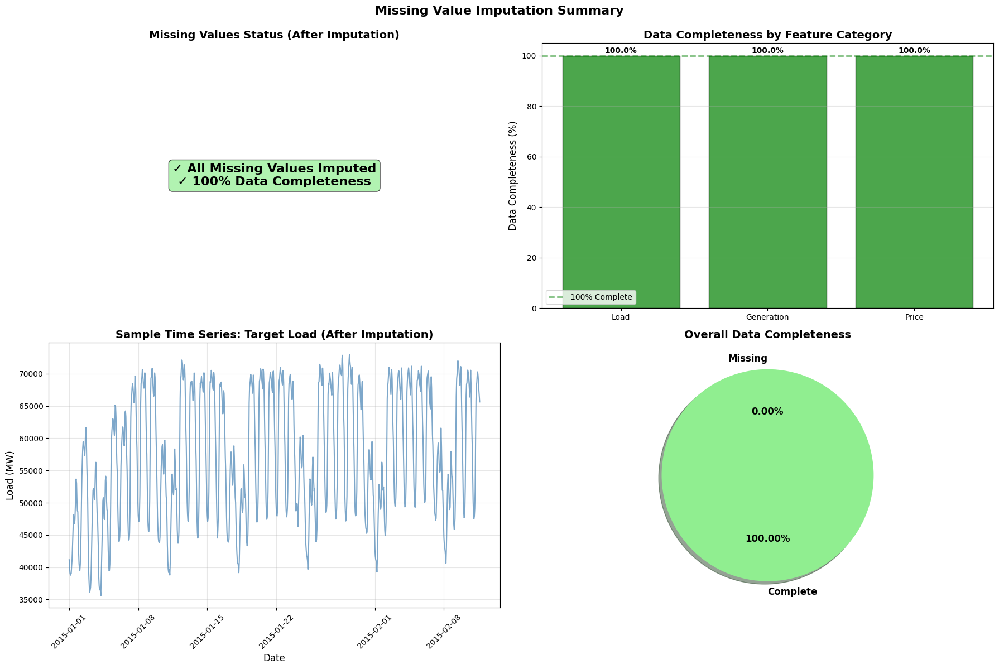

Preprocessing Dashboard: Alex's Historical Data Audit
Alex does not begin with models. He begins with reliability: coverage, continuity, and data quality.
Raw dataset
50,401 rows × ~300 cols
Audit focus
Coverage + missingness
Window selection
2015–2018 (consistent)
Outcome
Model-ready dataset
Preprocessing Plots
Click an image to zoom.
Data Overview
Time series analysis and distribution patterns

Temporal coverage by year and timeline availability
Coverage analysis across regions and time periods

Missing Data Processing
Heatmap of missing by category + missing over time + missing by month

Feature Correlation
Correlation structure across engineered and raw features

Missing by Feature
Top missing features ranked by percentage and count

Outlier Detection Analysis
Box plots, counts, time series, and percentage analysis

Class Distribution & Weights
Imbalance analysis and cost-sensitive learning weights

Gap Filling Impact Analysis
Time series, missing pattern, and distribution comparison

Imputation Summary Dashboard
Status, completeness by category, time series, and overall summary

Outlier Treatment Impact
Distribution comparison across five key features

Preprocessing Summary
What Alex "accepts" before modeling begins
- Coverage verified across the modeling window
- No timestamp gaps in selected interval
- Missingness characterized before imputation
- Signal sanity-checked (distribution + cycles)
- Outliers identified and treated conservatively
- 100% data completeness achieved